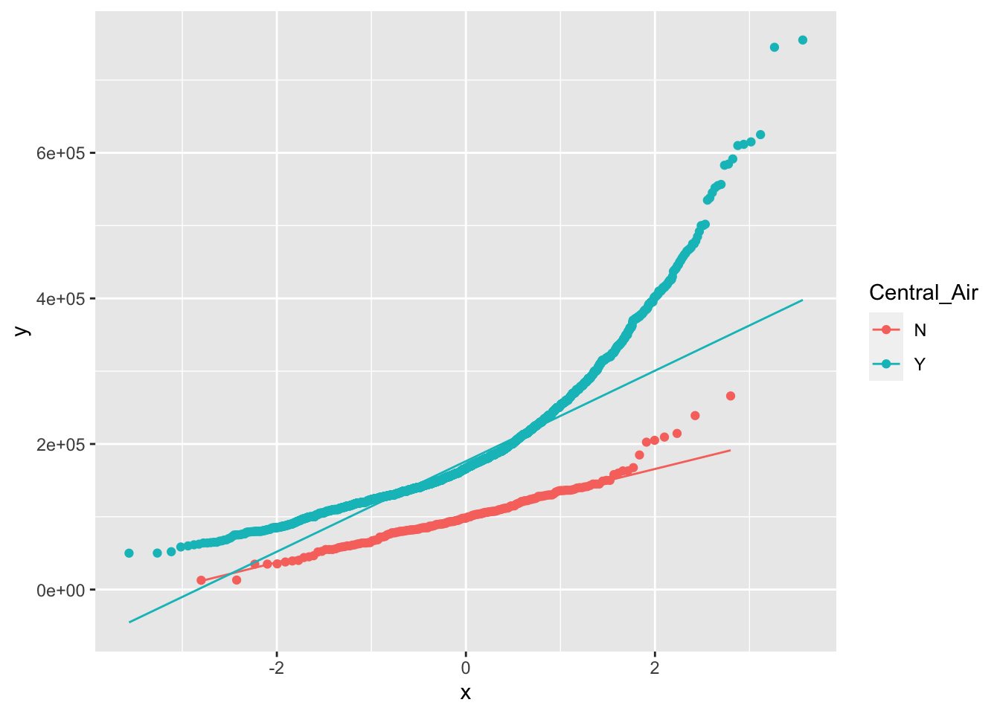

Code
sample(c("Heads", "Tails"), 1)[1] "Heads"Code
n <- 100
outcomes <- sample(c("Heads", "Tails"), n, replace = T)
sum(outcomes == "Heads")[1] 52Last time we talked about different statistical measures like mean and standard deviation. These are called point estimates.
There is variability among samples. However, we can have a margin of error for our estimate via the Central Limit Theorem
Distribution of sample means is approximately Normal, regardless of the population parameter’s distribution given a large sample size (\(n \geq 50\)).
Standard error measures the variability of our statistic estimate. Compare to the sample standard deviation, \(s\), which is a measure of the variability in your data.
\[ s_{\bar{x}} = \frac{s}{\sqrt{n}} \]
As the sample size grows larger, our confidence in the standard error grows
When we create a confidence interval for the true population mean:
\[ \bar{x} \pm t \cdot \frac{s}{\sqrt{n}} \]
In other words, the t-value indicates the number of standard error from the mean for the margin of error.
With a 95% confidence interval, we are 95% “confident” that the true population mean exists. Confidence is not probability. If we repeated our experiment 100 times then 95 times we will have captured the true value.
A hypothesis test investigates if we can prove that the true population value is significantly different than an assumed value.
We simulate the flipping of a coin in R. With a fair coin and 100 flips you expect about 50 Heads.
sample(c("Heads", "Tails"), 1)[1] "Heads"n <- 100
outcomes <- sample(c("Heads", "Tails"), n, replace = T)
sum(outcomes == "Heads")[1] 52With 10000 trials:
library(ggplot2)
trials <- 10000
n <- 100
set.seed(11)
number_heads <- vector()
for (i in 1:trials) {
outcomes <- sample(c("Heads", "Tails"), n, replace = T)
number_heads[i] <- sum(outcomes == "Heads")
}
df <- data.frame(number_heads)
ggplot(df, aes(x = number_heads)) +
geom_density(color = "blue") +
labs(x = "Number of heads in 100 tosses")
Testing a mean against a hypothesized value. A one-sided test is looking to see if the true mean is greater than or less than a hypothesized value. A two-sided test is looking to see if the true mean is different than a hypothesized value.
We first need to calculate the t-statistic:
\[ t = \frac{\bar{x} - \mu_0}{s_{\bar{x}}} \]
One-sample t-tests need a large enough sample size for the Central Limit Theorem to hold. If you don’t have sample size, then the population distribution needs to be Normal.
We want to know if the true Sales Price is different then $178,000.
The null hypothesis is \(H_0\): \(\mu = 178000\) and the alternative is \(H_a\): \(\mu \neq 178000\). \(\alpha = 0.05\)
library(AmesHousing)
ames <- make_ordinal_ames()
t.test(ames$Sale_Price, mu = 178000)
One Sample t-test
data: ames$Sale_Price
t = 1.8945, df = 2929, p-value = 0.05825
alternative hypothesis: true mean is not equal to 178000
95 percent confidence interval:
177902.3 183689.9
sample estimates:
mean of x
180796.1 Do not reject the null hypothesis as p-value \(> \alpha\)
To conduct a directional t-test:
t.test(ames$Sale_Price, mu = 178000, alternative = "greater")
One Sample t-test
data: ames$Sale_Price
t = 1.8945, df = 2929, p-value = 0.02913
alternative hypothesis: true mean is greater than 178000
95 percent confidence interval:
178367.7 Inf
sample estimates:
mean of x
180796.1 t.test(ames$Sale_Price, mu = 178000, alternative = "less")
One Sample t-test
data: ames$Sale_Price
t = 1.8945, df = 2929, p-value = 0.9709
alternative hypothesis: true mean is less than 178000
95 percent confidence interval:
-Inf 183224.4
sample estimates:
mean of x
180796.1 We are now testing the difference between two means.
\(H_0: \sigma_1^2 = \sigma_2^2\)
\(H_a: \sigma_1^2 \neq \sigma_2^2\)
\(F = \frac{\max(s_1^2, s_2^2)}{\min(s_1^2, s_2^2)}\)
We first need to verify the normality condition:
ggplot(ames, aes(sample = Sale_Price, color = Central_Air)) +
stat_qq() +
stat_qq_line()
Normality seems to fail with houses that have central air conditioning. However, for illustration we will still conduct the two-sample t-test.
Note that in practice if normality fails then some groups consider not even conducting a t-test when variances are equal–just go straight to variances are not equal.
var.test(Sale_Price ~ Central_Air, data = ames)
F test to compare two variances
data: Sale_Price by Central_Air
F = 0.2258, num df = 195, denom df = 2733, p-value < 2.2e-16
alternative hypothesis: true ratio of variances is not equal to 1
95 percent confidence interval:
0.1854873 0.2800271
sample estimates:
ratio of variances
0.2257977 Reject \(H_0\) based on the p-value so we conclude that the variances are not equal.
t.test(Sale_Price ~ Central_Air, data = ames, var.equal = FALSE)
Welch Two Sample t-test
data: Sale_Price by Central_Air
t = -27.433, df = 336.06, p-value < 2.2e-16
alternative hypothesis: true difference in means between group N and group Y is not equal to 0
95 percent confidence interval:
-90625.69 -78498.92
sample estimates:
mean in group N mean in group Y
101890.5 186452.8 With a regular two-sample t-test we reject the null hypothesis that the means are equal.
However, our normality assumption wasn’t satisfied so we should use a nonparametric test that does not rely on normality.
The question we are answering with this test is, “Are the median sale prices of houses with and without central air the same?”
wilcox.test(Sale_Price ~ Central_Air, data = ames)
Wilcoxon rank sum test with continuity correction
data: Sale_Price by Central_Air
W = 63164, p-value < 2.2e-16
alternative hypothesis: true location shift is not equal to 0| Conditions | Interpretation of Significant Mann-Whiteney-Wilcoxon Test |
|---|---|
| Group distributions are identical in shape, variance and symmetric | Difference in means |
| Group distributions are identical in shape, variance, but not symmetric | Difference in medians |
| Group distributions are not identical in shape, variance, and are not symmetric | Difference in location (distributional dominance) |